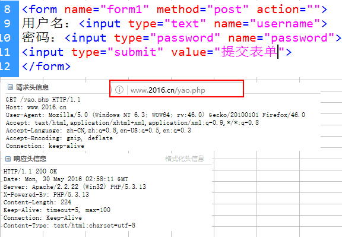

PHP3http-day14（HTTP请求响应、文件下载）
一、B/S网络结构
PHP没有兼容性，浏览器才有兼容性。
Browser->HTTP请求>-------<HTTP响应<--Server-->SQL请求>-------<SQL响应<数据库服务器
二、HTTP超文本传输协议。HTTP是浏览网络资源的一种标准。一种上网的标准
特点：简单（HTTP发送的内容主要是请求方法和请求资源的地址），无连接、无状态（没有记忆状态）
三、URL(Uniform Resource Locator)统一资源定位符。对互联网上文件访问的一种方式。
1、URL的构成
语法：protocol://host[:port]/directory/filename?name=value#anchor
- 协议 主机名 端口号 目录名 文件名 传参 锚点名（#top,#red）
2、HTTP请求由三个部分构成：请求行、请求头信息、请求的主体
2.1请求行的格式
格式：请求方法 请求资源的URI HTTP协议版本号-----例GET/yao.php HTTP/1.1
1、GET/POST 2、URI（统一资源标识符）3、版本
注意URL(统一资源定位符)：http://www.2016.cn/abc/yao.html和URI(统一资源标识符)/abc/yao.html区别
2.1.1GET和POST区别（补充）：HTTP协议本身，GET方式和POST方式都没有大小限制，但浏览器本身对GET有限制大小(2083b)，POST方式没有大小限制
2.2请求头含义Response Headers
Host: www.2016.cn ------》 请求的主机名称
//用户代理：将你的机器告诉服务器
User-Agent: Mozilla/5.0 (Windows NT 6.3; WOW64; rv:46.0) Gecko/20100101 Firefox/46.0
//告诉服务器，浏览器可以接收什么类型的文件
Accept: text/html,application/xhtml+xml,application/xml;q=0.9,*/*;q=0.8
//告诉服务器，你可以接收什么语言
Accept-Language: zh-CN,zh;q=0.8,en-US;q=0.5,en;q=0.3
//告诉服务器，可以接收什么样的压缩格式
Accept-Encoding: gzip, deflate
//连接类型：长连接和短连接。
Connection: keep-alive
2.3请求主体
GET方式没有请求的主体，只有POST方式才有主体数据
2.4带有附件的http请求头
<form name="form1" method="post" enctype="multipart/form-data" action="">
在一个网页有两张图片，需要几次HTTP请求？3次

// 获取一个GMT格式的时间 echo gmstrftime("%b %d %Y %H:%M:%S", time()).' GMT';
防盗链
1、Refrerer的概述
Refrerer是一个请求的头信息，记录了当前用户，是从哪个页面链接过来的。--注意就是要判断跳转前网站是不是自己的
文件下载的防盗,电商安全验证,统计网站路由
什么情况下获取不到Referer
1、直接在地址栏输入网址，浏览器不会发送Referer
2、从收藏夹打开网址，浏览器不会发送Referer
3、从HTTPS的网站跳转到HTTP的网站时，浏览器是不会发送Referrer的。
if (isset($_SERVER['HTTP_REFERER'])) {
if(strpos($_SERVER['HTTP_REFERER'], "http://www.wdc.com/PHPlianxi")===0)
{ echo "可以下载";
}else{ echo "非法盗链"; }
} else { echo "非法操作"; }
四、HTTP协议详解之响应篇
1、HTTP响应的构成
语法：状态行 响应头部 响应体
2、状态行的格式
语法：协议版本 状态码 状态文本描述---例HTTP/1.1 200 OK
3、状态码的含义
状态码是由三位数字构成，第一位数字定义了响应的类型。


4、响应报头含义

HTTP/1.1 200 OK //响应状态行
Date: Mon, 30 May 2016 08:04:07 GMT //请求的时间
Server: Apache/2.2.22 (Win32) PHP/5.3.13 //告诉客户端服务器的相关信息
X-Powered-By: PHP/5.3.13
Content-Length: 25 //内容的长度
Keep-Alive: timeout=5, max=100 //连接保持多长时间后断后
Connection: Keep-Alive //连接类型:保持连接
Content-Type: text/html //返回客户端文件类型
5、响应头域Refresh
header("refresh:5;url=test.html");定时跳转header("refresh:5);//服务端刷新
header('location:test.html');
<meta http-equiv="refresh" content="5;test.html">//客户端刷新
<script>location.href="test.html"</script>
6、使用header()函数禁用缓存
- Expires：设置网页缓存的过期时间，格式是GMT。
- Cache-Control：HTTP/1.1提供的。
- Pragma：兼容HTTP/1.0。不同浏览器支持不同的选项。为了所有浏览器都能生效，这两个选项都使用。
$gmt=gmstrftime("%b %d %Y %H:%M:%S ",time()+30).'GMT';//获取一个GMT格式的时间
header("Expires:$gmt);
禁用浏览器缓存
header("Expires:-1");
header("Cache-Control:no-cache");
header("Pragma:no-cache");
五、下载文件的HTTP响应头
1、Cotent-Type:application/octet-stream//例：header("Content-Disposition:attachment;filename=文件名");
描述：设置响应头为八进制的数据流。
header("Content-Type:application/octet-stream");//声明响应头为：八进制数据流（进制数据）
2、Accept-Ranges:bytes断点续传---提示：服务器首先要配置断点续传的功能。
3、Accept-Length:filesize
描述：告诉客户端文件的大小。如果客户端数据下载完成，要进行数据大小的比对。
4、Content-Disposition:attachment;filename=文件名//告诉浏览器文件下载方式，以及下载的文件名
//下载函数七步骤
function doDownload($fileName){
header('Expires：-1'); // 禁止缓存
header('Cache-Control:no-cache');//禁止缓存兼容旧版本
header('Pragma:no-cache'); //禁止缓存兼容旧版本
header('Content-type:application/octet-stream'); //1、设置响应头为八进制数据流
header('Content-Transfer-Encoding: binary'); //2、告诉浏览器传送数据编码方式为2进制
header('Accept-Ranges:bytes'); //3、支持断点续传 需要服务器支持断点续传功能
$fileSize = filesize($fileName);
header("Accept-Length:$fileSize"); //4、告诉客户端文件大小
// 取出文件名中的空格
$tmpName = str_replace(' ', '-', $fileName);
$tmpName = str_replace(' ', '-', $tmpName);
$tmpName = explode('/', $tmpName);
$tmpName = array_pop($tmpName);
header("Content-Disposition:attachment;filename=$tmpName"); // 5、告诉浏览器文件下载方式,以及下载的文件名
ob_end_clean(); // 清空前面的输出（这一步不可忘）
$handle = fopen($fileName, 'rb'); //6、输出文件流
while($con = fread($handle, 1024)){
echo $con;
}
fclose($handle); //7、关闭文件流
}